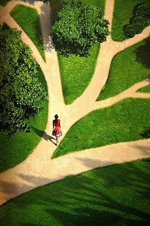
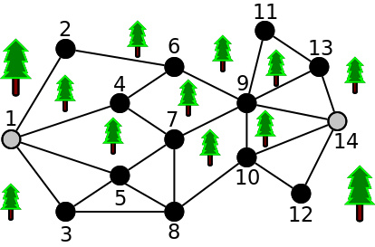
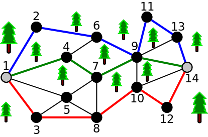
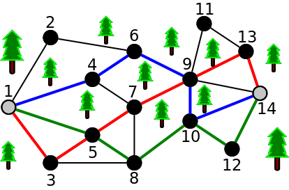

Para efeitos da nota atribuida à resolução de exercícios ao longo do semestre - Submeter até 23:59 de 3 de Janeiro
(o problema continuará depois disponível para submissão, mas sem contar para a nota)
O Aniceto adora correr no parque da cidade. Todos os dias ele faz o seu treino e não conseguiu deixar de reparar que por vezes era aborrecido percorrer caminhos iguais. Decidido a quebrar a monotonia, ele decidiu encontrar o maior número possível de caminhos que nunca repetem o mesmo trilho.
O parque pode ser pensado como um grafo com V nós e E arestas, onde cada aresta é um trilho a ligar dois nós (pode correr-se em qualquer um dos sentidos). Um exemplo é o parque da seguinte figura, com 14 nós e 24 trilhos:

O Aniceto quer sempre correr entre o primeiro nó (indicado pelo número 1) e o último nó (identificado pelo número V - no caso da figura o nó 14). Dois caminhos dizem-se diferentes se nunca repetirem uma mesma aresta, ou seja, se seguirem sempre por trilhos diferentes (mesmo que passem por nós iguais). Para o exemplo de figura anterior, existem no máximo 3 caminhos diferentes que nunca repetem trilhos (indicados a azul, verde e vermelho):

Nota que existem outros caminhos possíveis, mas nunca se consegue criar mais do que 3 caminhos diferentes que não partilhem pelo menos um trilho. Uma outra maneira de obter os 3 caminhos seria:

Dado o mapa do parque (o grafo), tens de ajudar o Aniceto a descobrir qual o maior número de caminhos diferentes (sem partilhar arestas) que se consegue formar entre o primeiro e o último nó.
A primeira linha contém dois inteiros V e E indicando respectivamente o número de nós e de arestas (trilhos) a considerar.
Seguem-se exactamente E linhas, cada uma com dois inteiros A B, indicando que existe um trilho (bidirecional) entre os nós A e B.
Os nós são representados por inteiros entre 1 e V (inclusive) e é garantido que existe sempre pelo menos um caminho entre 1 e V.
O output deve ser constituído por uma única linha indicando o número máximo de caminhos diferentes (sem partilhar trilhos) que podem existir entre o nó 1 e o nó V.
São garantidos os seguintes limites em todos os casos de teste que irão ser colocados ao programa:
| 1 ≤ V ≤ 15 | Quantidade de nós | |
| 1 ≤ E ≤ 100 | Quantidade de arestas |
14 24 1 2 1 4 1 5 1 3 2 6 4 6 4 7 3 5 3 8 5 7 5 8 7 8 7 9 6 9 8 10 10 9 11 9 13 11 13 9 14 9 10 14 10 12 12 14 14 13
3
O exemplo de input corresponde à figura do enunciado.
Desenho e Análise de Algoritmos (CC2001)
DCC/FCUP - Faculdade de Ciências da Universidade do Porto